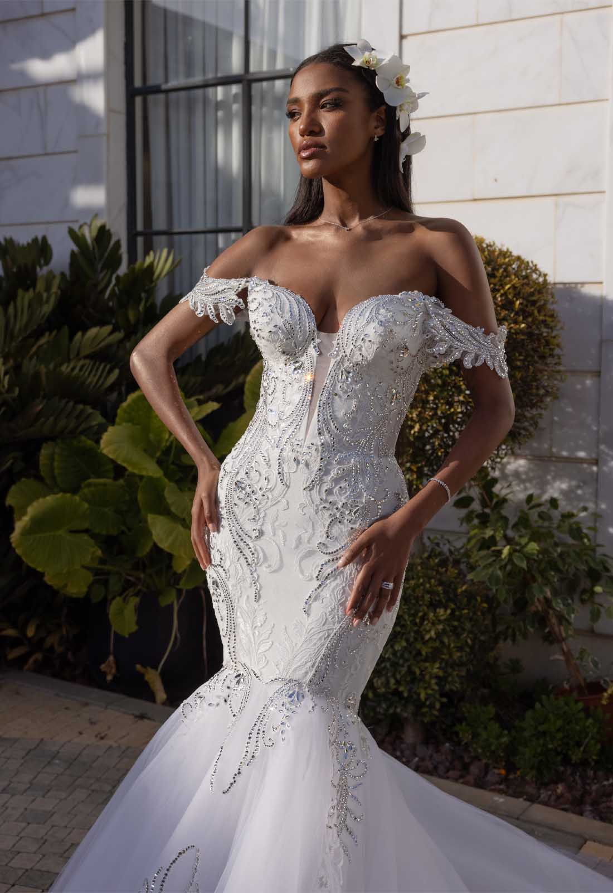

Princesa
Para tipos de cuerpo “reloj de arena” (este tipo de cuerpo es contorneado, quiere decir que tiene en general buen tamaño de busto, cintura chica).

Sirena
Cuando se trata de moda para novias, el estilo sirena es uno de los que nunca pasa de moda, porque resalta la silueta de la mujer, y la hace femenina y sexy a la vez.

Linea A
Para tipos de cuerpo “triángulo”, cuerpos con espalda chica y caderas grandes, por eso, con un vestido de novia línea A, disimulamos las caderas y espalda.
RAMOS DE CEREMONIA. Elegí el adecuado.
Es importante tener en cuenta tanto el vestido como el estilo de la novia y la decoración de la boda a la hora de elegir el ramo.

TOCADOS Y VELOS. Se tu misma.
El accesorio perfecto nunca estuvo tan cerca. Los mejores para tu día.